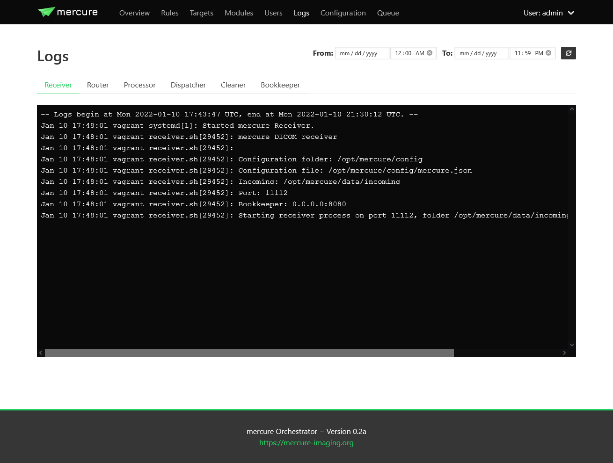

Monitoring
mercure provides three different mechanisms for monitoring the server activity and health.
Log files
All mercure services write detailed logging information into system log files. The most convenient way to review these logs is to use the “Logs” page of the mercure web interface. It shows a separate tab for every mercure service. The log display is updated whenever you switch between tabs or when you click the refresh button on the top-right.
{kind=link}
Depending on your mercure installation type, you can restrict the time span shown in the log viewer using the From/To controls (systemd-type installations allow providing start & end time, Docker-type installations allow providing a start time, Nomad-type installations don’t allow selecting the time span).
Note
In systemd-mode, only the last 1000 lines of each log are displayed to keep the user interface responsive. If you are looking for an older event, use the From/To fields to narrow down the time span.
Tip
In systemd-mode, the log files can also be viewed in a terminal shell using the journalctl command by providing the service name as argument. For example, “journalctl -u mercure_ui.service” shows the log of the webgui. You can see the names of the different services as tooltip when hovering over the tabs on the “Logs” page.
Graphite
Graphite is a very powerful tool for monitoring the health of a server. It can collect time-series data from various sources and stores the data in a database. Instead of displaying the data directly with Graphite, the collected data is often visualized using Grafana, which makes it very easy to create dashboards for various data sources and to setup alerts.
We highly recommend that you monitor your mercure server with Graphite and Grafana. In a typical setup, Graphite and Grafana are running on a separate monitoring server. Basic health parameters such as the available disk space, CPU load, and memory usage can be collected by installing the collectd service on your server, which will transmit the information to your Graphite instance.
mercure can transmit additional information about its activities to Graphite. To enable it, shutdown all mercure services and edit the keys graphite_ip and graphite_port in the file mercure.json (here you need to enter the IP and port of your Graphite instance). Afterwards, restart the mercure services.
mercure transmits the following information to Graphite:
Key |
Meaning |
|---|---|
mercure.router.main.incoming.series |
Number series in the incoming folder waiting for completion |
mercure.router.main.incoming.files |
Number of received DICOM files waiting in the incoming folder |
mercure.router.main.events.run |
Triggered when the router checks for incoming files (value=1) |
mercure.router.main.events.boot |
Triggered when the router is started (value=1) |
mercure.router.main.events.shutdown |
Triggered when the router shuts down (value=1) |
mercure.dispatcher.main.events.run |
Triggered when the dispatcher checks for outgoing series (value=1) |
mercure.dispatcher.main.events.boot |
Triggered when the dispatcher is started (value=1) |
mercure.dispatcher.main.events.shutdown |
Triggered when the dispatcher shuts down (value=1) |
mercure.cleaner.main.events.run |
Triggered when the cleaner checks for files to-be-deleted (value=1) |
mercure.cleaner.main.events.boot |
Triggered when the cleaner is started (value=1) |
mercure.cleaner.main.events.shutdown |
Triggered when the cleaner shuts down (value=1) |
By creating a visualization of the mercure.x.main.events.run events, you can monitor that all processes are active and responsive.
Tip
If you have an advanced installation with multiple instances of the router, dispatcher, or cleaner services, it is necessary to name the individual instances (e.g., instance1 & instance2 instead of main). This can be done by providing a name as command-line argument when starting the services (thus, this needs to be configured in the systemd startup scripts).
The most convenient way for installing Graphite and Grafana is using Docker Compose. Below, you can see a template for docker-compose.yml file for installing both tools. Note that you need to replace the values […] with your own information.
version: "3"
services:
grafana:
image: grafana/grafana
container_name: grafana
restart: always
ports:
- "3000:3000"
networks:
- grafana-net
volumes:
- grafana-storage:/var/lib/grafana
environment:
- GF_INSTALL_PLUGINS=[add plugins if you want]
graphite:
image: graphiteapp/graphite-statsd
container_name: graphite
restart: always
ports:
- "2003-2004:2003-2004"
- "2023-2024:2023-2024"
- "8125:8125/udp"
- "8126:8126"
networks:
- grafana-net
volumes:
- /[install path]/configs:/opt/graphite/conf
- /[install path]/data:/opt/graphite/storage
- /[install path]/statsd_config:/opt/statsd/config
networks:
grafana-net:
volumes:
grafana-storage:
external: true
Bookkeeper with Redash
All mercure components transfer real-time information about their activities to mercure’s bookkeeper service, which acts as central monitoring hub. The bookkeeper service can be disabled if not needed, but it is recommended to use it because it allows answering questions such as which series have been processed (or discarded) or how long average processing times were. It also keeps track of all errors and processing abnormalities that might occur. Moreover, because the bookkeeper tracks all DICOM files that pass through the server, including series that are discarded, it can be used for data mining tasks that exceed the capabilities of many PACS systems (e.g., searching for series where a certain contrast agent has been administered).
Bookkeeper is running as RESTful service on a TCP/IP port (by default 8080) and stores the received information in a PostgreSQL database, which can be queried for analytics purpose.
The following information is stored in the database:
Table |
Meaning |
|---|---|
mercure_events |
General events of mercure modules, e.g. startup or detected errors |
webgui_events |
Activities in the webgui, e.g. login attempts or configuration changes |
dicom_files |
All received DICOM files with file name, file UID, and series UID |
dicom_series |
Information on all received series, including relevant tag information |
series_events |
All processing events related to one series, e.g. dispatch or discard |
file_events |
Currently unused |
dicom_series_map |
Currently unused |
The tables dicom_series, series_events, and dicom_files can be joined using series_uid as common column, allowing to query the events associated with one series and the names of the individual DICOM files.
A very convenient and powerful tool for working with the collected PostgreSQL data is the Redash web application. Redash allows prototyping SQL queries right in the browser and provides a navigator for the database keys. The query results can be displayed as tables or graphically using various visualization options. The visualizations can then be embedded into dashboards, allowing to rapidly create custom dashboards for various applications without need for any programming besides formulating the SQL queries. The dashboards can even be made interactive using a set of available user controls that can be integrated into the SQL queries. Redash is equipped with a multi-user authorization system and can be used simultaneously by different users.
Dashboards that we created for our own mercure installation include:
A dashboard to display all mercure events in chronological order, with separate display of ERROR events and separate display of the web activity (“System Status”)
A “Dispatch Browser” that allows reviewing which patient exams have been dispatched to a certain target within a selectable time span
A “Patient Browser” that allows searching by patient name, sequence, MRN, or ACC and shows all matching images series
A “Series Detail” dashboard that is cross-linked from the other dashboards and shows all collected information for a selected series, including all DICOM tags and processing events
Instructions how to create these dashboards are provided in the Dashboard Gallery.
Installing Redash
Redash is a powerful open-source web application for analyzing and visualizing data stored in SQL databases, such as the data collected by the bookkeeper service. Instead of integrating limited analysis functions into mercure’s own web interface, we decided to utilize Redash instead, which provides much greater flexibility. You can learn more about Redash at http://redash.io.
Before proceeding with the installation of Redash, it is recommended to create a dedicated Postgres database user for Redash (named “redash”) with read-only permissions for the database tables that the bookkeeper service created during the mercure installation. This can be achieved by running the following commands in a bash shell (make sure to replace the password in the command shown below).
For systemd-type installations (make sure to use a user account with sudo rights):
sudo -i -u postgres
psql
\c mercure
CREATE USER redash with encrypted password 'put-password-here';
GRANT CONNECT ON DATABASE mercure TO redash;
GRANT USAGE ON SCHEMA public TO redash;
GRANT SELECT ON ALL TABLES IN SCHEMA public TO redash;
ALTER DEFAULT PRIVILEGES IN SCHEMA public GRANT SELECT ON TABLES TO redash;
\q
exit
For Docker-type installations, it is necessary to open a shell in the Docker container running the postgres database. You can find the contained ID by entering “docker ps” and looking for the container running the image “postgres:alpine”. Then, type the following commands:
sudo docker exec -it [container ID] /bin/bash
psql -U mercure
\c mercure
CREATE USER redash with encrypted password 'put-password-here';
GRANT CONNECT ON DATABASE mercure TO redash;
GRANT USAGE ON SCHEMA public TO redash;
GRANT SELECT ON ALL TABLES IN SCHEMA public TO redash;
ALTER DEFAULT PRIVILEGES IN SCHEMA public GRANT SELECT ON TABLES TO redash;
\q
exit
Note
The GRANT commands need to be rerun whenever the database tables have been dropped (e.g., when clearing the database).
Redash provides a convenient installation script that uses Docker for the Redash deployment. It is highly recommended to use this script, unless you are very familiar with Redash.
wget https://raw.githubusercontent.com/getredash/setup/master/setup.sh
chmod 700 setup.sh
sudo ./setup.sh
Open the Redash configuration page in a web browser
http://[server ip]/setup
After setting up your Redash administrator password, click the top-right configuration icon and select “New Data Source”. Select a PostgreSQL database and enter the following connection settings
Type: Postgres
Name: mercure
Host: 172.17.0.1
Port: 5432
User: redash
Password: [as selected above]
Database Name: mercure
Afterwards, click “Save” and validate the database connection by clicking the button “Test Connection”. If you see a green “Success” notification on the bottom-right, everything works.
Tip
If you want to run Redash on a different port than :80, then you need to edit the file “/opt/redash/docker-compose.yml” and change the value “80:80” in the nginx section to, e.g., “8888:80”. Afterwards, you need to restart the nginx container.
Alerts
It is highly recommended to setup alerts for processing errors and server problems, so that you are automatically notified if the mercure router needs your attention. Both Grafana and Redash provide functions for automatic alerts that can be utilized. With both tools, alerts can be delivered via email. However, we recommend using a messaging tool that supports custom webhooks, such as Slack. In this way, alerts can be delivered in real-time and across multiple devices, including smartphones.
Examples for useful alerts include:
The disk space on the server has dropped below a certain threshold [alert via Grafana]
The server cannot be reached (“pinged”) over the network [alert via Grafana]
The mercure services (router, dispatcher, cleaner) have not notified Graphite for a longer period [alert via Grafana]
The bookkeeper has received any error notification [alert via Redash]
The number of series dispatched to a certain target fell below the expected value [alert via Redash]
In addition to the alerting options provided by Grafana and Redash, it is also possible setup custom notifications via a small Python script that is periodically executed and that calls the webhooks of your messaging service.
Important
If you develop your own alert scripts, make sure to NEVER post any sensitive patient information (PHI) to the messaging service